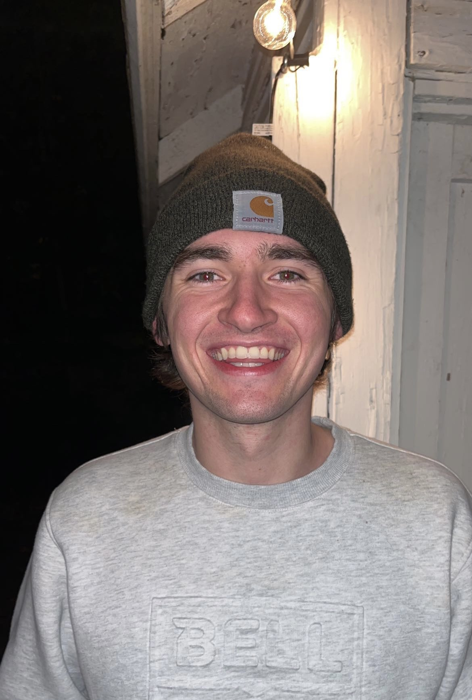

Domain Expert
 Matthew Crandall
Matthew Crandall
Artifacts Manager
Eric GabbardTraffic Jam Assist is a system based on Adaptive Cruise Crontrol. When using Adaptive Cruise Control your vehicle will continue at a set speed unless it detects a vehicle in front of yours. Then the system will adjust according to the speed of the car ahead of you until it senses no more obstacles.
Traffic Jam Assist hopes to build on this. On particular approved highways the system hopes to allow adjustment to traffic flow up to and including stopping completely until the flow of traffic is no longer obstructed. Then the system will continue on the pre-set speed from before you stopped.
Project Manager
Abhinay DevapatlaDomain Expert
Matthew Crandall
Artifacts Manager
Eric GabbardSecurity/Assurance Manager
Muxing DaiProject Facilitator
 Gram Boyle